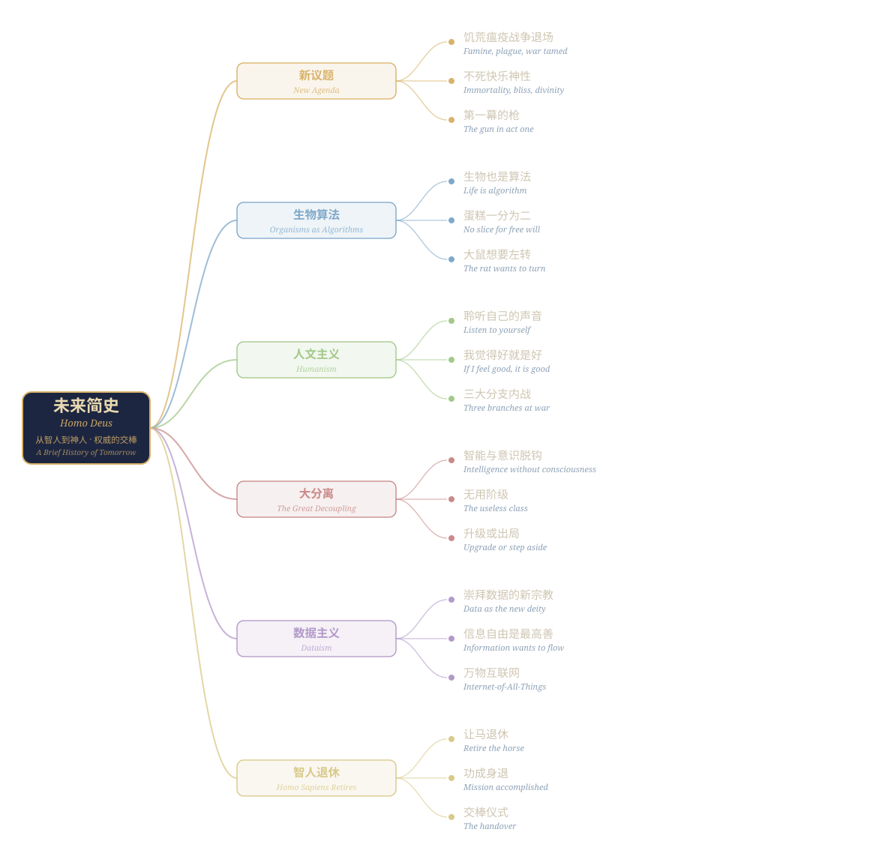

未来简史
〇 · 书籍信息
基本信息
| 书名 | 《未来简史：从智人到神人》——《人类简史》的续篇：旧三大议题（饥荒、瘟疫、战争）已被遏制之后，人类的新议题是什么——长生不死、幸福快乐、化身为神 |
|---|---|
| 作者 | 赫拉利：同一支笔写下两部简史——这一部从「过去」转向「未来」，写法却不变：把宏大命题压进几个可检验的判断（生物是算法、自由意志不存在、数据主义是新宗教） |
| 结构 | 三部分：智人征服世界（算法与意义的网）→ 智人为世界赋予意义（人文主义革命及其三大分支）→ 智人失去控制权（大分离、科技人文主义、数据主义） |
| 体裁 | 思辨未来学：「这一部分并不是单纯的哲学思考或空谈未来，而是仔细审视智能手机、约会的做法和就业市场，从蛛丝马迹中判断未来将会如何」 |
| 一句话 | 人文主义曾以「聆听自己内心的声音」征服世界，但生物学的三个发现（生物是算法、自由意志不存在、自我也可分割）正在拆除它的地基——可能接棒的，是崇拜数据的数据主义。 |
一 · 核心主题总览
三部曲里的四组母题：① 新议题：从灭火到造神
几千年来人类的三大心头大患——饥荒、瘟疫、战争——「已经从过去『不可理解、无法控制的自然力量』转化为『可应对的挑战』」——「因营养过剩而死亡的人数超过因营养不良而死亡的人数，自杀身亡的人数甚至超过被士兵、恐怖分子和犯罪分子杀害的人数的总和」；于是人类自问：接下来要做什么？答案藏在早已藏在桌下的野心——不死、快乐、神性。
② 生物也是算法
生命科学的核心命题被推进日常：「生物体都是生化算法」「同样的数学定律同时适用于生化算法及电子算法」——动物与机器的隔阂被打破，人的感受不过是神经元的放电模式。大鼠实验是最直观的注脚：遥控器让它「自己想」左转就左转——「是我想爬梯子，所以就爬了。这不就证明了我有自由意志吗？」——欲望本身可以被制造，「依欲望行事」算不上自由。
③ 人文主义：自己就是权威
「几个世纪以来，人文主义一直想让我们认为，人类自己就是意义的本源，因此自由意志也是最高的权威」——政治上聆听选民、经济上聆听顾客、教育上聆听学生；卢梭《爱弥儿》是这套感受崇拜的「圣经」：我觉得好，就是好。但作者埋下伏笔：「一把在第一幕中出现、将在第三幕中发射的枪」——人文主义的兴起同时播下其灭亡的种子。
④ 数据主义：接力棒传给谁
「目前最耐人寻味的新兴宗教正是『数据主义』，它崇拜的既不是神也不是人，而是数据」——宇宙由数据流组成，万物互联是历史的目标；数据主义的最高诫命是「数据流最大化」，信息自由是最高善。结论冷得彻底：「汽车取代马车，我们并不是让马升级，而是直接让马退休。或许，智人也到了该退休的时候」。
二 · 第一段 人类的新议题 —— 长生不死与幸福快乐—— 饥荒瘟疫战争 · 神人的野心 ——
三大议题的退场
第 1 章的宏大对照：20 世纪的中国人、中世纪的印度人、古代的埃及人面对同样三大问题——「一代又一代，人类向所有神明、天使和圣人祈祷膜拜，也发明了无数的工具、制度和社会系统，但仍然有数百万人死于饥饿、流行病和暴力」——先知们认定这是上帝的宇宙计划，除非时间尽头否则无法摆脱。而今天的态度完全变了：灾难再爆发，「我们不再耸耸肩说这是上帝的旨意，而是成立调查委员会」——把灾难从命运改写为故障，是现代性的真正起点。
◆ 语言学习 · 概念 · 新议题
| 三大议题 | 饥荒 · 瘟疫 · 战争：几千年来的人类心头大患 |
|---|---|
| 可应对的挑战 | 议题的现代身份：从「命运」改为「故障」 |
| 调查委员会 | 现代面对灾难的反应式——相信总有人能修好 |
| 生物贫穷线 | 温饱门槛的新刻度：问题从饿死变成撑死 |
句型 ｜ 「我们不再需要祈求某位神或圣人来解救人类。」——一句陈述句终结了一部祈祷史：现代性的标志不是消灭了灾难，是把灾难的归因从天上搬到了会议桌上。
不死、快乐、神性
新议程的三件套被一一点名：「我们已经达到前所未有的繁荣、健康与和谐……接下来的目标很可能是长生不死、幸福快乐，以及化身为神」。作者清醒地指出这不是新闻：「虽然这些梦想在科技上显得十分傲慢，但在思想上早已不是新闻——这只不过是把早就藏在桌下的事情公开摆上台面罢了」。同时按下伏笔：「如果最早提出的是一个有缺陷的理想，常常是到理想即将实现的那一刻，才会赫然发现」——「一把在第一幕中出现、将在第三幕中发射的枪」：同样的科技可以让人进化为神，也可能让人类失去意义。
◆ 语言学习 · 概念 · 神人
| 长生不死 | 新议题一：死亡的末日——对抗衰老成为工程问题 |
|---|---|
| 幸福快乐 | 新议题二：从「追求幸福的权利」变成「幸福快乐的权利」 |
| 化身为神 | 新议题三：智人升级为神人（Homo deus） |
| 第一幕的枪 | 戏剧术语：人文主义的胜利里埋着它崩塌的引信 |
习语 ｜ 「一把在第一幕中出现、将在第三幕中发射的枪。」——用戏剧法则写历史预测：契诃夫之枪指向人文主义自身——让你登顶的力量，与让你出局的力量，是同一把。
三 · 第二段 生物也是算法 —— 自由意志的死亡—— 大鼠与遥控器 · 蛋糕一分为二 ——
实验室里的大象
「人类有自由意志」被科学解剖：「虽然这种说法在洛克、卢梭或杰斐逊的时代可能很有道理，但根据生命科学的最新发现，却已经不再成立。自由意志与当代科学之间的矛盾，已经成了实验室里的一头大象」。20 世纪打开了智人这个黑盒子：「既没找到灵魂，也没找到自由意志，只找到基因、激素、神经元，遵守着与世界其他所有事物都相同的物理和化学法则」。推理极简：「人的选择不是生物预设就是随机，两者就像蛋糕一分为二，没有哪一小块属于『自由意志』」——进化的逻辑补上最后一刀：如果动物真自由选择，自然选择就无用武之地。
◆ 语言学习 · 概念 · 自由意志之辩
| 实验室的大象 | 房间里的大象的变体：人人假装看不见的矛盾 |
|---|---|
| 生物预设 | 刺激引发连锁生化反应——每一环都由前一环决定 |
| 蛋糕一分为二 | 预设与随机的二分法：没有第三块留给「自由」 |
| 自然选择 | 自由的反证：真能自由选择，进化便无从筛选 |
句型 ｜ 「不是生物预设就是随机，就像蛋糕一分为二，没有哪一小块属于自由意志。」——二分法排除法的教科书示范：「自由」不是被驳倒了，是发现自己根本没有住址。
大鼠想要左转
最生动的实验：研究者用遥控器操纵大鼠的行动——「塔瓦尔教授按下遥控器，是让大鼠自己想要往左走，于是它就往左走」；大鼠并不觉得受控：「我当然有自由意志啊！你看，是我想要左转，所以就左转了」。作者的推论直指人心：「最重要的问题并不在于能不能根据内在欲望采取行动，而是究竟能不能选择要产生什么欲望」——欲望只是神经元的放电模式，至于放电来自内心还是遥控器，「真有那么重要吗？」。这一问为第三部分埋好引信：如果欲望可以被外部制造，「聆听自己的内心」就不再是权威，只是接口。
◆ 语言学习 · 概念 · 欲望制造
| 大鼠实验 | 遥控器操纵欲望的实验：行动自由≠欲望自由 |
|---|---|
| 欲望的选择 | 关键问题：你能否选择「想要什么」——不能 |
| 意识流 | 欲望在其中起伏的流：没有不变的自我拥有欲望 |
| 接口化内心 | 第三部分的暗示：内心从权威降级为界面 |
习语 ｜ 「是我想要左转，所以就左转了。这不就证明了我有自由意志吗？」——大鼠的独白成了全书最锋利的镜子：用「我想要」证明自由，恰恰是自由最标准的人质声明。
四 · 第三段 人文主义革命 —— 向内心探寻—— 聆听内心 · 三大分支 ——
卢梭与感受的圣经
人文主义的历史被讲成权威的大迁徙：「从小，我们就不断听到各种人文主义的口号：要聆听自己的声音，对自己真诚，相信自己，追随自己的心」——卢梭《爱弥儿》成为 18 世纪感受的「圣经」：「我觉得好，就是好，我觉得坏，就是坏」。它征服了三个领域：政治上用民主选举聆听人民、经济上以顾客的自由意志取代公会与王公、教育上以学生为中心——中世纪问「神怎么说」，现代问「你怎么想」。
◆ 语言学习 · 概念 · 人文主义
| 人文主义 | 对人类的崇拜：生命、快乐与能力被神圣化 |
|---|---|
| 内心的声音 | 新的最高权威——从神谕到自我感觉 |
| 顾客的自由意志 | 经济领域的权威转移：市场取代公会 |
| 爱弥儿 | 卢梭的教育小说：感受崇拜的奠基文本 |
句型 ｜ 「我觉得好，就是好，我觉得坏，就是坏。」——感受主权宣言：三百年权威史的最后落点：意义不再来自天上、书上、君王口里，只来自「我觉得」。
三大分支与人文战争
人文主义内部分裂为三：正统派「自由人文主义」——每个人独一无二，自由意志高于国家利益；社会人文主义（社会主义）——把权威从个人体验移到集体；进化人文主义——尊重卓越的少数， 为超人开路。三支同根相煎：「宗教的人文战争」贯穿二十世纪——自由主义与社会主义的分野、法西斯主义作为进化人文主义的极端变体。冷战以自由主义获胜告终，让它以为历史已然终结——但「人文主义的兴起同时播下其灭亡的种子」：它的胜利建立在对自由意志与单一自我的信念上，而科学正在拆这两块砖。
◆ 语言学习 · 概念 · 人文战争
| 自由人文主义 | 正统派：个人体验是意义与权威的源头 |
|---|---|
| 社会人文主义 | 集体变体：权威在群体体验与阶级 |
| 进化人文主义 | 变体三：以进化为尺，尊卓越而弃平庸——法西斯的远亲 |
| 历史的终结 | 自由主义胜利后的幻觉：以为故事已经讲完 |
习语 ｜ 「人文主义的兴起，同时也播下其灭亡的种子。」——全书主题句：一个理想最危险的时刻，是它即将实现的时刻——胜利会把它地基上的裂缝照得雪亮。
五 · 第四段 智人失去控制权 —— 大分离与数据主义—— 无用之人 · 万物互联 ——
大分离：智能与意识脱钩
第 9 章点出 21 世纪最要紧的技术趋势：「智能正在与意识脱钩」——过去智能与意识必须同行（有意识才懂开车），现在无意识的算法以惊人速度发展，而智能不再需要意识。于是大分离：一部分人升级为神人，大部分人「不被踢出局就算胜利」——本书的一个著名警告由此而来：当算法比你更了解你自己（HealthMe 知道你要感冒、算法知道你想买什么、想投谁），「聆听内心」将输给「查询数据」。科技人文主义的应对是升级心智——但「人类如果还想不被踢出局，就得积极将心智升级」：升级的尽头，还是不是人类？
◆ 语言学习 · 概念 · 大分离
| 智能与意识脱钩 | 技术趋势的核心句：会思考不再需要会感受 |
|---|---|
| 无用阶级 | 被算法取代后既无经济价值也无军事价值的人群 |
| 神人 | Homo deus：升级后的智人——对抗无意识算法的最后方案 |
| 算法比你懂你 | 权威转移的心理机制：外部数据压过自我感觉 |
句型 ｜ 「智能正在与意识脱钩。」——七个字的技术判断支撑全书第三部分：历史上智能与意识是连体婴，21 世纪给它们办了分居——失业问题从此换了语法。
数据主义：把接力棒传给信息
终章的新宗教登场：「2016 年，有一位候选人坐在历史的接待室，等待面试。这位候选人名叫『信息』——数据主义崇拜的既不是神也不是人，而是数据」。它的教义清晰：「宇宙由数据流组成，任何现象或实体的价值就在于对数据处理的贡献」——贝多芬第五交响曲、股市泡沫和流感病毒，不过是数据流的三种模式。它的诫命也清晰：第一条，让数据流最大化；第二条，把一切连到万物互联网，连不想连入的异端也不能例外——「信息不再流通，与死亡有何异？因此对数据主义来说，信息自由就是最高的善」。结局冷峻：万物互联一旦完成，「智人就会功成身退」。
◆ 语言学习 · 概念 · 数据主义
| 数据主义 | Dataism：崇拜数据的科技宗教——两大母学科是计算机科学与生物学 |
|---|---|
| 万物互联网 | Internet-of-All-Things：人类作为单一数据处理系统的产出 |
| 信息自由是最高善 | 数据主义诫命：阻碍数据流通就是大罪 |
| 功成身退 | 智人的历史角色：造完万物互联，然后让位 |
习语 ｜ 「汽车取代马车，我们并不是让马升级，而是直接让马退休。或许，智人也到了该退休的时候。」——全书最后一击：不是末日宣言，是人事安排——历史不需要你同意，只需要你交接。
六 · 人物图鉴与成长弧线—— 主角配角 · 一张表看穿 ——
主要人物
赫拉利——续写简史的叙事者——这一部的角色更像下注者：他把整本书押在「权威迁移」这条主线上，并自己提示「我的论断是判断，不是预言」
人文主义——第二部分的主角——三百年间把「人」捧上神坛的宗教：它的三大分支打了整整一个世纪的内战，又共享同一个科学定时炸弹
数据主义——第三部分登场的新主角——「坐在历史接待室等待面试的候选人」：不是人，是信息的代言人
大鼠——第 10 章的无名演员——「我想要左转就左转」的独白者：以最小的哺乳动物演示了自由意志的幻觉结构
次要人物（功能位）
| 卢梭 | 《爱弥儿》作者——感受崇拜的「圣经」执笔者：我觉得好，就是好 |
|---|---|
| 塔列朗式配角——塔瓦尔教授 | 遥控大鼠的实验者——按下按钮就是制造欲望：第三部分的物理学预演 |
| 边沁 | 幸福议题的思想源头——「至善是幸福快乐」的理想被国家强势系统冷落一个世纪后，重新登上议程 |
| 草坪 | 「一段关于草坪的历史」——从法老宫苑到郊区住宅的心智符号：人被地位想象驯化的微型标本 |
七 · 主题与象征—— 每个道具都在说话 ——
| 枪 ↔ 伏笔 | 契诃夫之枪——第一幕的胜利，就是第三幕的案发工具 |
|---|---|
| 蛋糕 ↔ 自由意志 | 一分为二的蛋糕——没有哪一块属于自由：自由没有住址 |
| 遥控器 ↔ 欲望 | 大鼠实验——「我想要」可以被按下：内心从圣坛降级为插座 |
| 接待室 ↔ 候选人 | 信息等待面试——权威的更替像招聘：不看你多优秀，看岗位换了什么 |
| 马 ↔ 智人 | 让马退休——历史的裁员通知从来不附申诉渠道 |
八 · 写作手法赏析—— 怎么写，就能怎么学 ——
① 戏剧伏笔法
契诃夫之枪贯穿全书——第一部分立靶（人文主义），第二部分装弹（科学发现），第三部分开枪
② 实验证词
大鼠、黑猩猩、聪明的马——哲学论断全部配动物证人，抽象问题落到笼子与遥控器
③ 三部曲结构
征服世界→赋予意义→失去控制——与《人类简史》共用骨架，把时间轴从过去拉向未来
④ 自曝限定
「这部分并不是单纯的哲学思考」——作者不断声明判断与预言的边界，把争议权留给读者
九 · 名段欣赏—— 原文精读 · 逐段赏析 ——
十 · 金句摘录—— 14 条 · 中英对照 · 带出处 ——
"几千年来，人类向所有神明、天使和圣人祈祷膜拜……但仍然有数百万人死于饥饿、流行病和暴力。"—— 第1章
"虽然这些问题还算不上被完全解决，但已经从过去「不可理解、无法控制的自然力量」转化为「可应对的挑战」。"—— 第1章
"因营养过剩而死亡的人数超过因营养不良而死亡的人数，因年老而死亡的人数超过因传染病死亡者。"—— 第1章
"接下来的目标很可能是长生不死、幸福快乐，以及化身为神。"—— 第1章
"虽然这些梦想在科技上显得十分傲慢，但在思想上早已不是新闻。"—— 第1章
"一把在第一幕中出现、将在第三幕中发射的枪。"—— 第1章
"生物也是算法。"—— 第2章 · 小节标题
"到头来，我们奉为神圣的「自由」就像「灵魂」一样，只是个空虚的词语，只存在人类发明的想象故事中。"—— 第10章
"人的选择不是生物预设就是随机，两者就像蛋糕一分为二，没有哪一小块属于「自由意志」。"—— 第10章
"是我想爬梯子，所以就爬了。这不就证明了我有自由意志吗？"—— 第10章 · 大鼠
"要聆听自己的声音，对自己真诚，相信自己，追随自己的心。"—— 第7章 · 人文主义口号
"我觉得好，就是好，我觉得坏，就是坏。"—— 第7章 · 卢梭
"目前最耐人寻味的新兴宗教正是「数据主义」，它崇拜的既不是神也不是人，而是数据。"—— 第11章
"汽车取代马车，我们并不是让马升级，而是直接让马退休。或许，智人也到了该退休的时候。"—— 第11章
十一 · 拓展阅读—— 原文 · 词条 · 译文 ——
十二 · 个人感悟与心得—— 三点心得 ——
三点感悟
① 权威在迁移，留意你的坐标
从神谕到内心再到数据，权威的每次搬家都改变权力结构：个人层面的自检问题是「我现在听谁的」——如果答案是「感觉」，请再问一句「这个感觉是谁放进来的」。
② 算法时代的手动挡
大分离不必然发生：把一部分决策留给自己的慢判断（为什么、值不值、要不要），是对抗「全托管生活」的手动挡——效率让渡不是投降，是主权保留。
③ 数据不是意义
数据主义能优化一切可量化的东西，但「值得」这件事永远需要人的签核：它能算出最优解，算不出「这份最优解你想不想要」——意义仍然只能在人与人的对话里签发。
这本书把未来写成一场交棒仪式：祭司把权杖交给皇帝，皇帝交给选民，选民可能交给算法——但交接桌上还剩一样东西没人能拿走： decide 是否点头的，仍然得是那个会问「为什么」的智人。
十三 · 一页速查（复习用）
| 新议题 | 饥荒瘟疫战争退位：不死 · 快乐 · 神性——把野心从桌下摆上桌面 |
|---|---|
| 生物算法 | 自由意志无处容身：预设与随机的蛋糕里没有第三块 |
| 人文主义 | 聆听内心三百年：政治听选民、市场听顾客——同时埋下灭亡的种子 |
| 大分离 | 智能与意识脱钩：无用阶级与神人的分流正在开始 |
| 数据主义 | 信息自由是最高善：万物互联完成后，智人功成身退 |
十四 · 全书思维导图—— 一图纵览 ——

一图纵览全书骨架 · 中英双语对照 · 手机端可左右滑动查看全图